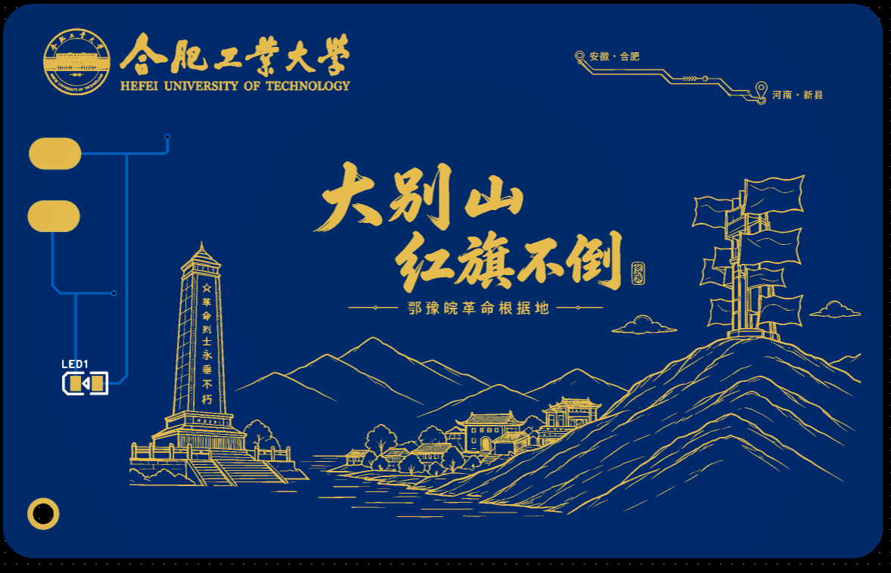

红色记忆 · 山水古村 · 茶香新县
沿着足迹，走进新县
从红色起点出发，穿过山水、古村与茶园，认识大别山精神在新县的现实回响。
手机可直接访问，也可通过 NFC 近场进入
14导览点位
4主题类别
地图一键查看

全域文旅
新县值得去的地方
游客导览
怎么游新县
新县·红绿古茶
该网站由合肥工业大学仪器学院“碧血丰碑凝大别，青春长征绘新篇”团队独立制作
红色记忆 · 山水古村 · 茶香新县
从红色起点出发，穿过山水、古村与茶园，认识大别山精神在新县的现实回响。
手机可直接访问，也可通过 NFC 近场进入

全域文旅
游客导览
新县·红绿古茶